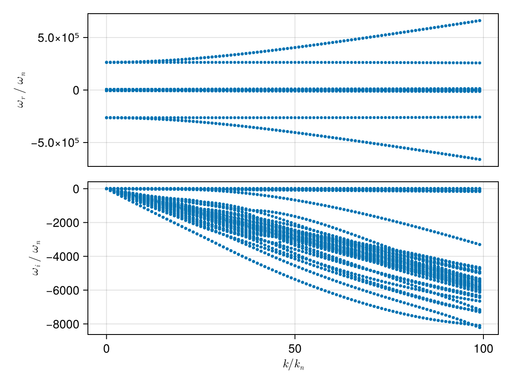
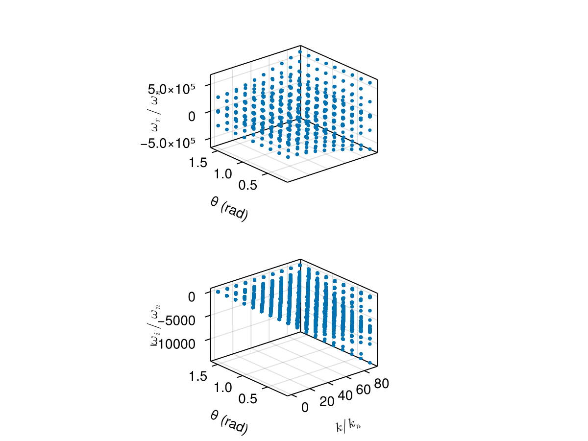
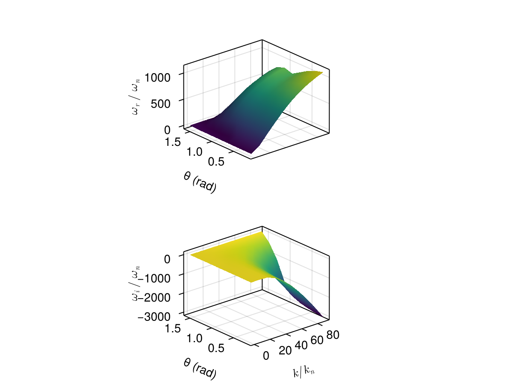

Case: Dispersion surface tracking (2D scan)
This page demonstrates how to construct a dispersion surface by scanning a 2D parameter space (wave number k and propagation angle θ) and using branch tracking to follow a consistent mode across the scan.
We consider a typical electron–proton plasma and scan:
kin normalized unitsk/k_n, wherek_n = ω_pi/cθfrom 5° to 90°
using PlasmaBO
using PlasmaBO: c0
B0 = 5e-9 # [Tesla]
n = 5.0e6
T = 12.94
ion = Maxwellian(:p, n, T)
electron = Maxwellian(:e, n, T)
species = (ion, electron)
wn = abs(B0 * ion.q / ion.m)
wpi = plasma_frequency(ion.q, n, ion.m)
kn = wpi / c0
wci = wn
# Kinetic solver settings (adjust upward for accuracy)
N = 33Dispersion Curve Scan
julia> using CairoMakiejulia> θ = deg2rad(45);julia> k_ranges = (0.01:1:100) .* kn;julia> results = solve_kinetic_dispersion(species, B0, k_ranges, θ; N)Solving dispersion... 2%|▋ | ETA: 0:01:02 Solving dispersion... 15%|████▌ | ETA: 0:00:13 Solving dispersion... 28%|████████▍ | ETA: 0:00:09 Solving dispersion... 41%|████████████▎ | ETA: 0:00:07 Solving dispersion... 54%|████████████████▎ | ETA: 0:00:06 Solving dispersion... 67%|████████████████████▏ | ETA: 0:00:04 Solving dispersion... 80%|████████████████████████ | ETA: 0:00:03 Solving dispersion... 93%|███████████████████████████▉ | ETA: 0:00:01 Solving dispersion... 100%|██████████████████████████████| Time: 0:00:13 PlasmaBO.DispersionSolution{StepRangeLen{Float64, Base.TwicePrecision{Float64}, Base.TwicePrecision{Float64}, Int64}, Nothing, Vector{Vector{ComplexF64}}}(9.819772774325405e-8:9.819772774325405e-6:0.0009722557023859583, nothing, Vector{ComplexF64}[[-126621.4672679358 + 3.828484288995915e-11im, -126181.2335617592 + 1.5791842202502766e-9im, -125742.53624571368 + 9.847263783716302e-11im, -2638.5615125116046 - 0.24087074983545376im, -2638.561512511591 - 0.24087074983393109im, -2638.5615125115755 - 0.2408707498342142im, -2638.4470794029603 - 0.2651185849232014im, -2638.4470794029558 - 0.2651185849246076im, -2638.4470794029535 - 0.26511858492351326im, -2638.354345226277 - 0.2802846465683645im … 2638.354345226296 - 0.28028464656731644im, 2638.4470794029653 - 0.2651185849247123im, 2638.4470794029676 - 0.26511858492450746im, 2638.4470794029867 - 0.26511858492194995im, 2638.5615125115687 - 0.24087074983569498im, 2638.561512511591 - 0.24087074983492585im, 2638.561512511606 - 0.2408707498358758im, 125742.53624571396 - 3.6524036462368963e-11im, 126181.23356175912 - 1.5268851946137258e-9im, 126621.46726793551 - 9.722567060424265e-11im], [-126647.93288366735 + 2.9409363833110547e-11im, -126198.78017643755 - 1.7497786027715013e-10im, -125768.49399567676 + 1.2540599114707618e-10im, -2671.7111478460683 - 24.32794573333239im, -2671.7111478460606 - 24.327945733332342im, -2671.711147593096 - 24.327946381600125im, -2660.1534038743707 - 26.77697707736556im, -2660.153403874369 - 26.776977077366034im, -2660.1533937083386 - 26.77696518381656im, -2650.7873334594565 - 28.308737348809018im … 2650.787333459467 - 28.308737348808677im, 2660.1533937083555 - 26.77696518381754im, 2660.1534038743443 - 26.77697707736614im, 2660.153403874352 - 26.776977077366183im, 2671.7111475930897 - 24.327946381601173im, 2671.7111478460565 - 24.32794573333177im, 2671.7111478460574 - 24.327945733332776im, 125768.4939956772 - 1.3610743497535535e-11im, 126198.78017644341 + 9.50608229915713e-10im, 126647.93288366724 - 1.2909750098879196e-10im], [-126729.58511430107 - 4.560535276869677e-11im, -126252.24328930848 - 3.103753636908006e-11im, -125838.32042849872 - 9.042379179889261e-11im, -2704.8607831805434 - 48.41502071682874im, -2704.8607831805402 - 48.41502071682929im, -2704.8607790051337 - 48.415031004598696im, -2681.859728345763 - 53.28883556981917im, -2681.8597283457593 - 53.28883556980696im, -2681.8595700162678 - 53.288644626271605im, -2663.2214457964847 - 56.337045928971406im … 2663.2214457965038 - 56.33704592897228im, 2681.859570016292 - 53.288644626271086im, 2681.859728345767 - 53.28883556980771im, 2681.85972834578 - 53.288835569819184im, 2704.86077900514 - 48.41503100459919im, 2704.8607831805507 - 48.415020716829716im, 2704.8607831805643 - 48.415020716829304im, 125838.32042849888 + 6.224576409863403e-11im, 126252.24328930801 + 2.891392745593449e-10im, 126729.58511430095 + 9.129053069045767e-11im], [-126874.21315688328 + 9.958966984413564e-11im, -126353.1017694374 - 2.4211665077243676e-9im, -125929.08359060551 + 1.0348344403610099e-10im, -2738.010418515041 - 72.50209570032851im, -2738.010418515036 - 72.5020957003246im, -2738.0103964776513 - 72.50214797624437im, -2703.5660528172075 - 79.80069406229163im, -2703.566052817171 - 79.80069406224779im, -2703.5652634619646 - 79.79971264545469im, -2675.659577387702 - 84.36493439609941im … 2675.6595773876893 - 84.3649343961013im, 2703.565263461963 - 79.79971264545503im, 2703.566052817151 - 79.80069406224814im, 2703.56605281721 - 79.80069406229156im, 2738.010396477634 - 72.5021479762454im, 2738.0104185150294 - 72.50209570032732im, 2738.0104185150567 - 72.50209570032348im, 125929.0835906057 + 2.0998284226736487e-11im, 126353.10176943781 + 2.762279364982831e-9im, 126874.21315688315 - 2.000235362768887e-10im], [-127089.77289696812 - 2.2011494976455005e-12im, -126528.24590785298 - 7.340044497502999e-10im, -126007.80899764062 + 3.5472176538733405e-11im, -2771.1600538495245 - 96.58917068382654im, -2771.1600538495086 - 96.58917068382549im, -2771.159981173002 - 96.58933685189459im, -2725.2723772885597 - 106.3125525546914im, -2725.2723772885333 - 106.31255255467917im, -2725.2699163174675 - 106.30939728197981im, -2688.10657889028 - 112.39212601123499im … 2688.1065788902847 - 112.39212601123769im, 2725.2699163174548 - 106.30939728198084im, 2725.2723772885206 - 106.31255255467742im, 2725.2723772885497 - 106.31255255469051im, 2771.1599811729934 - 96.58933685189514im, 2771.1600538494936 - 96.58917068382459im, 2771.160053849497 - 96.58917068382571im, 126007.80899764011 + 1.1459633242338896e-10im, 126528.24590785326 + 5.940392131213517e-10im, 127089.77289696857 - 8.486722435918637e-11im], [-127378.4397966582 + 5.41662132781528e-10im, -126793.98995903807 - 1.0072271550826698e-9im, -126058.45622573244 + 5.835693467139325e-10im, -2804.309689183981 - 120.67624566732115im, -2804.3096891839464 - 120.6762456674189im, -2804.3095042095542 - 120.6766537016826im, -2746.978701759957 - 132.82441104713143im, -2746.9787017584836 - 132.82441104533058im, -2746.9727769856095 - 132.81657460605044im, -2700.5692392630103 - 140.41851343432091im … 2700.569239263009 - 140.41851343432242im, 2746.9727769856154 - 132.81657460605084im, 2746.978701758487 - 132.8244110453276im, 2746.978701759956 - 132.82441104713277im, 2804.30950420956 - 120.67665370168238im, 2804.3096891839573 - 120.6762456674202im, 2804.3096891839973 - 120.67624566732044im, 126058.45622573239 - 3.888089850079268e-10im, 126793.98995903911 + 9.989613039498718e-10im, 127378.43979665823 - 5.85023807175844e-10im], [-127738.94860172104 + 3.90502104136234e-10im, -127145.06531048175 - 2.5765882693593604e-10im, -126088.09003924254 + 2.4614044144998954e-10im, -2837.459324518458 - 144.763320650817im, -2837.45932451834 - 144.76332065117558im, -2837.4589252206756 - 144.7641711446763im, -2768.685026231358 - 159.33626953957392im, -2768.685026226025 - 159.33626953292617im, -2768.672924228663 - 159.31974820607155im, -2713.0562176558674 - 168.4443419436639im … 2713.056217655858 - 168.4443419436618im, 2768.6729242286656 - 159.31974820607007im, 2768.685026226031 - 159.33626953292557im, 2768.6850262313733 - 159.3362695395743im, 2837.458925220697 - 144.76417114467586im, 2837.459324518329 - 144.76332065117145im, 2837.4593245184606 - 144.76332065081814im, 126088.09003924238 - 4.1819703255896457e-10im, 127145.06531048189 + 2.663952849591204e-10im, 127738.9486017213 - 4.038427188143845e-10im], [-128169.42572430756 - 3.1573719148106956e-11im, -127573.1714029431 + 2.873192502712695e-10im, -126105.98252502606 + 4.594860697823287e-10im, -2870.608959852958 - 168.8503956343182im, -2870.608959852479 - 168.8503956354407im, -2870.60819095332 - 168.85197811023585im, -2790.391350702739 - 185.848128032013im, -2790.3913506860404 - 185.84812801080682im, -2790.3692964739757 - 185.8170321217968im, -2725.577921239972 - 196.4704027342003im … 2725.5779212399802 - 196.47040273420268im, 2790.3692964739926 - 185.81703212179912im, 2790.3913506860586 - 185.84812801080847im, 2790.391350702731 - 185.8481280320143im, 2870.608190953338 - 168.85197811023636im, 2870.6089598524695 - 168.85039563543972im, 2870.608959852958 - 168.8503956343152im, 126105.98252502602 + 1.6211743059102446e-10im, 127573.17140294252 - 7.429088658205308e-10im, 128169.42572430777 + 2.4989764012446625e-10im], [-128668.12341033496 + 3.5501464512074067e-10im, -128073.1326647041 + 7.110574769778624e-10im, -126117.42420347678 - 2.1010711783672604e-10im, -2903.7585951874357 - 192.93747061781465im, -2903.7585951861415 - 192.9374706207671im, -2903.757233908084 - 192.94017934109024im, -2812.097675174166 - 212.35998652445616im, -2812.0976751306484 - 212.3599864682682im, -2812.0607260698284 - 212.30613687983237im, -2738.146327367028 - 224.4982309359676im … 2738.1463273670247 - 224.49823093596748im, 2812.0607260698243 - 212.30613687983217im, 2812.097675130637 - 212.35998646826914im, 2812.097675174153 - 212.35998652445522im, 2903.7572339080866 - 192.94017934109078im, 2903.7585951861247 - 192.9374706207667im, 2903.758595187438 - 192.93747061781283im, 126117.42420347562 - 5.364455546441604e-10im, 128073.13266470327 - 1.676868551063559e-10im, 128668.12341033481 + 2.0953813114324408e-10im], [-129233.51638687716 + 6.21791366322188e-10im, -128641.84988830119 - 5.77181931510463e-10im, -126125.1320986967 + 1.2710086657607813e-10im, -2936.908230521897 - 217.02454560131122im, -2936.908230518529 - 217.02454560884829im, -2936.905971020661 - 217.02889465545013im, -2833.8039996455655 - 238.87184501689697im, -2833.803999535739 - 238.87184487251997im, -2833.745978424275 - 238.7843583300142im, -2750.774750548749 - 252.53030073353702im … 2750.7747505487514 - 252.53030073354046im, 2833.745978424271 - 238.78435833001328im, 2833.8039995357612 - 238.87184487252247im, 2833.8039996455545 - 238.87184501689703im, 2936.9059710206516 - 217.02889465545013im, 2936.9082305185043 - 217.02454560884794im, 2936.9082305219176 - 217.0245456013133im, 126125.13209869675 - 2.785824904094625e-10im, 128641.8498883024 + 6.871490607216228e-10im, 129233.51638687772 - 3.427171378421293e-10im] … [-292756.0899833149 - 7.610056432863459e-8im, -292634.1757455267 - 1.9093884093618864e-8im, -124412.16722600051 - 1.5540450026123595e-5im, -5622.028692614835 - 2168.077619264604im, -5621.916937952556 - 2168.197815596369im, -5545.181136177553 - 2163.7970592864267im, -4943.9068164731725 - 2333.5008160732755im, -4809.033237483562 - 2051.486942235311im, -4742.618687228736 - 2168.0776192645944im, -4741.875986938422 - 2168.8120223835817im … 4741.875986938437 - 2168.8120223835854im, 4742.618687228766 - 2168.0776192646276im, 4809.033237483568 - 2051.486942235355im, 4943.90681647325 - 2333.500816073344im, 5545.181136177526 - 2163.797059286395im, 5621.916937952578 - 2168.1978155963775im, 5622.028692614794 - 2168.077619264587im, 124412.16722600018 - 1.5539624256035537e-5im, 292634.1757455265 - 1.8965103265600192e-8im, 292756.0899833151 - 7.583048500237055e-8im], [-295386.9100311158 - 7.465206022164292e-8im, -295271.19267329975 - 2.039918460424549e-8im, -124323.23509881197 - 1.6477962156245178e-5im, -5655.178327949291 - 2192.1646942481098im, -5655.060187581064 - 2192.291513216923im, -5574.3540970354825 - 2186.7907369346026im, -4977.889674601273 - 2364.919066548571im, -4846.607247427955 - 2071.5873348389214im, -4775.768322563207 - 2192.1646942481048im, -4775.00130582973 - 2192.922491398161im … 4775.001305829702 - 2192.9224913981475im, 4775.768322563219 - 2192.164694248098im, 4846.607247427938 - 2071.587334838997im, 4977.8896746014 - 2364.919066548669im, 5574.354097035482 - 2186.790736934599im, 5655.060187581042 - 2192.291513216938im, 5655.178327949266 - 2192.1646942480993im, 124323.23509881181 - 1.6478379930225075e-5im, 295271.19267329975 - 2.041980806666288e-8im, 295386.9100311161 - 7.463586371159181e-8im], [-298022.6996309182 - 7.299394547850334e-8im, -297913.3269601077 - 2.216496147204096e-8im, -124231.3952739749 - 1.7464589481323398e-5im, -5688.3279632838185 - 2216.251769231618im, -5688.203213962998 - 2216.3854225561968im, -5603.376878601448 - 2209.676681604204im, -5012.176933124665 - 2396.4834062599643im, -4884.164564851068 - 2091.740396465692im, -4808.917957897707 - 2216.2517692316032im, -4808.1263633209355 - 2217.032988192381im … 4808.126363320953 - 2217.032988192384im, 4808.917957897704 - 2216.2517692315932im, 4884.164564851063 - 2091.740396465727im, 5012.176933124717 - 2396.483406260029im, 5603.376878601444 - 2209.6766816041863im, 5688.203213962966 - 2216.3854225561618im, 5688.327963283801 - 2216.251769231602im, 124231.39527397483 - 1.7464509184345964e-5im, 297913.32696010784 - 2.2146394940136815e-8im, 298022.69963091856 - 7.289099812624045e-8im], [-300663.39356696565 - 7.04394226749206e-8im, -300560.3967341815 - 2.4575758591772372e-8im, -124136.6257668967 - 1.8500767055673196e-5im, -5721.477598618242 - 2240.338844215085im, -5721.3460168535075 - 2240.479542456947im, -5632.247290292769 - 2232.446470159814im, -5046.75915494704 - 2428.18873486096im, -4921.71201281616 - 2111.9563482573867im, -4842.067593232172 - 2240.338844215103im, -4841.251184799986 - 2241.143500801446im … 4841.251184799991 - 2241.1435008014537im, 4842.067593232172 - 2240.3388442150895im, 4921.712012816192 - 2111.956348257336im, 5046.759154946923 - 2428.188734860857im, 5632.247290292723 - 2232.4464701598017im, 5721.346016853474 - 2240.479542456932im, 5721.4775986182885 - 2240.338844215099im, 124136.62576689657 - 1.8501960958961017e-5im, 300560.3967341819 - 2.465689163955176e-8im, 300663.39356696676 - 7.091921361279674e-8im], [-303308.9564431644 - 6.768795701979948e-8im, -303212.199666796 - 2.7759528532812344e-8im, -124038.90695974707 - 1.9590606560003143e-5im, -5754.627233952766 - 2264.425919198597im, -5754.488596373499 - 2264.5738713884057im, -5660.963551481628 - 2255.0910901314446im, -5081.626372119581 - 2460.032433844416im, -4959.2566297159065 - 2132.243583692584im, -4875.217228566649 - 2264.4259191985834im, -4874.375796854036 - 2265.2540155397287im … 4874.375796854032 - 2265.254015539748im, 4875.217228566648 - 2264.4259191985843im, 4959.256629715902 - 2132.2435836925492im, 5081.626372119536 - 2460.032433844382im, 5660.963551481588 - 2255.09109013146im, 5754.488596373469 - 2264.573871388391im, 5754.627233952733 - 2264.42591919859im, 124038.90695974688 - 1.959093371727303e-5im, 303212.19966679584 - 2.7695918447534495e-8im, 303308.956443164 - 6.77355274092406e-8im], [-305959.3906778036 - 6.382266351716594e-8im, -305868.50452876603 - 3.157040377123274e-8im, -123938.22162449978 - 2.0735117296669353e-5im, -5787.776869287248 - 2288.5129941821024im, -5787.630953013855 - 2288.6684074467626im, -5689.5243816057 - 2277.6009263835253im, -5116.768265540175 - 2492.014103284705im, -4996.805399114755 - 2152.6089521832046im, -4908.366863901128 - 2288.5129941820796im, -4907.500226880052 - 2289.3645172349607im … 4907.500226880068 - 2289.364517234964im, 4908.366863901176 - 2288.512994182087im, 4996.805399114785 - 2152.6089521832646im, 5116.768265540256 - 2492.0141032847323im, 5689.524381605676 - 2277.6009263834944im, 5787.630953013877 - 2288.668407446784im, 5787.776869287245 - 2288.5129941820987im, 123938.22162449977 - 2.0735447645758346e-5im, 305868.50452876603 - 3.164399942079399e-8im, 305959.3906778039 - 6.381105777109042e-8im], [-308614.7445661371 - 5.901605533265146e-8im, -308529.0426978214 - 3.664909241906256e-8im, -123834.55494098122 - 2.1937263897183105e-5im, -5820.926504621727 - 2312.6000691656086im, -5820.773087638331 - 2312.7631483571304im, -5717.9291025360035 - 2299.965758678498im, -5152.174237183274 - 2524.1352932689356im, -5034.365074887987 - 2173.058035789118im, -4941.516499235592 - 2312.600069165576im, -4940.624502782433 - 2313.4749894663773im … 4940.6245027824225 - 2313.474989466367im, 4941.51649923562 - 2312.6000691655804im, 5034.36507488798 - 2173.0580357891017im, 5152.174237183299 - 2524.1352932689533im, 5717.929102536018 - 2299.965758678501im, 5820.773087638299 - 2312.7631483571226im, 5820.926504621743 - 2312.600069165612im, 123834.55494098063 - 2.193772060388779e-5im, 308529.04269782174 - 3.671997461651699e-8im, 308614.74456613784 - 5.902893462916836e-8im], [-311275.1159277848 - 5.2745981928920306e-8im, -311193.50409927656 - 4.256394112297337e-8im, -123727.89450967884 - 2.3198925926492336e-5im, -5854.076139956152 - 2336.6871441490803im, -5853.915001485602 - 2336.858091476537im, -5746.1777530554255 - 2322.1747740042447im, -5187.833397782794 - 2556.3992416889187im, -5071.942078874981 - 2193.595403649606im, -4974.666134570111 - 2336.687144149091im, -4973.748652738529 - 2337.5854147942446im … 4973.748652738539 - 2337.585414794235im, 4974.666134570099 - 2336.687144149078im, 5071.942078874929 - 2193.5954036495937im, 5187.833397782767 - 2556.399241688908im, 5746.177753055445 - 2322.17477400426im, 5853.915001485622 - 2336.858091476535im, 5854.076139956169 - 2336.6871441490757im, 123727.8945096791 - 2.3200014891576712e-5im, 311193.5040992768 - 4.268923703421024e-8im, 311275.1159277848 - 5.2925770432921126e-8im], [-313940.6425219099 - 4.5767317397199683e-8im, -313861.5463967749 - 4.98813864885042e-8im, -123618.23035965722 - 2.452496356421211e-5im, -5887.225775290701 - 2360.7742191325947im, -5887.056696170275 - 2360.953233797769im, -5774.271214401578 - 2344.2165982012616im, -5223.734490921901 - 2588.8106207791034im, -5109.542451117759 - 2214.2248373400066im, -5007.815769904562 - 2360.77421913258im, -5006.87270501756 - 2361.695774973426im … 5006.872705017591 - 2361.6957749734397im, 5007.815769904577 - 2360.7742191325806im, 5109.542451117768 - 2214.224837340033im, 5223.73449092193 - 2588.81062077915im, 5774.271214401537 - 2344.2165982012425im, 5887.056696170302 - 2360.953233797787im, 5887.225775290671 - 2360.7742191325797im, 123618.23035965688 - 2.4524236249676405e-5im, 313861.54639677383 - 4.979119694326073e-8im, 313940.64252190944 - 4.5657557734557486e-8im], [-316611.46915751847 - 3.790530697871135e-8im, -316532.827505263 - 5.763574355945643e-8im, -123505.55495153666 - 2.591520506563352e-5im, -5920.375410625136 - 2384.861294116078im, -5920.198173682382 - 2385.048571954691im, -5802.211344564239 - 2366.0793519951685im, -5259.865771929476 - 2621.3752887317282im, -5147.171836575296 - 2234.949525835599im, -5040.96540523904 - 2384.8612941160754im, -5039.996687838439 - 2385.806051148127im … 5039.996687838509 - 2385.806051148149im, 5040.965405239044 - 2384.8612941160663im, 5147.171836575312 - 2234.9495258356374im, 5259.865771929589 - 2621.375288731788im, 5802.21134456414 - 2366.079351995137im, 5920.198173682412 - 2385.0485719547005im, 5920.375410625124 - 2384.861294116074im, 123505.55495153635 - 2.591481620457372e-5im, 316532.82750526344 - 5.7552485661227374e-8im, 316611.4691575189 - 3.7814108960056436e-8im]])
plot(results, kn, wn)
using PlasmaBO: plot_branches
# k, ω pairs for initial branch points (see `BranchPoint` for more control over tracking)
initial_point = (50 * kn, -600 * wn *im)
branch = track(results, initial_point)
f, (ax1, ax2) = plot_branches((branch,), kn, wn)
ylims!(ax2, -3500,500)
f
Dispersion Surface Scan (2D)
julia> ks = (0.1:10:100.0) .* kn;julia> θs = deg2rad.(10.0:10.0:90.0);julia> res2d = solve_kinetic_dispersion(species, B0, ks, θs; N)Solving dispersion (k, θ)... 22%|█████▏ | ETA: 0:00:06 Solving dispersion (k, θ)... 33%|███████▋ | ETA: 0:00:06 Solving dispersion (k, θ)... 44%|██████████▎ | ETA: 0:00:05 Solving dispersion (k, θ)... 56%|████████████▊ | ETA: 0:00:04 Solving dispersion (k, θ)... 67%|███████████████▍ | ETA: 0:00:03 Solving dispersion (k, θ)... 78%|█████████████████▉ | ETA: 0:00:02 Solving dispersion (k, θ)... 89%|████████████████████▌ | ETA: 0:00:01 Solving dispersion (k, θ)... 100%|███████████████████████| Time: 0:00:10 PlasmaBO.DispersionSolution{StepRangeLen{Float64, Base.TwicePrecision{Float64}, Base.TwicePrecision{Float64}, Int64}, Vector{Float64}, Matrix{Vector{ComplexF64}}}(9.819772774325405e-7:9.819772774325404e-5:0.000884761526966719, [0.17453292519943295, 0.3490658503988659, 0.5235987755982988, 0.6981317007977318, 0.8726646259971648, 1.0471975511965976, 1.2217304763960306, 1.3962634015954636, 1.5707963267948966], Vector{ComplexF64}[[-126621.80061025688 + 1.3707465971481408e-10im, -126181.24222535486 + 1.1710538913166825e-9im, -125742.87425618316 + 5.846987748231946e-11im, -2642.8468602835806 - 3.354675534484284im, -2642.8468602835674 - 3.3546755344838677im, -2642.8468602835583 - 3.3546755344827615im, -2641.2531177883707 - 3.6923820397085603im, -2641.2531177883634 - 3.692382039713136im, -2641.253117788358 - 3.692382039713067im, -2639.9615824983184 - 3.9036040996082892im … 2639.961582498284 - 3.9036040996070027im, 2641.2531177883598 - 3.692382039711575im, 2641.25311778838 - 3.6923820397086375im, 2641.253117788384 - 3.6923820397128404im, 2642.846860283552 - 3.3546755344834764im, 2642.8468602835646 - 3.3546755344821992im, 2642.8468602835655 - 3.3546755344838157im, 125742.87425618309 - 1.3775428751476485e-10im, 126181.2422253549 - 1.1702149486582913e-9im, 126621.80061025695 - 5.806187423019334e-11im] [-126621.78541550916 + 1.1393387969182989e-11im, -126181.27204070387 + 4.409050115787424e-9im, -125742.85882737253 + 1.8187386726455134e-10im, -2642.635357548592 - 3.2009941384429936im, -2642.6353575485905 - 3.2009941384420117im, -2642.6353575485887 - 3.20099413844507im, -2641.1146261595877 - 3.523229935210295im, -2641.1146261595763 - 3.5232299352105345im, -2641.1146261595245 - 3.5232299351497507im, -2639.882257529749 - 3.7247756788961897im … 2639.8822575297627 - 3.7247756788950643im, 2641.11462615951 - 3.52322993514872im, 2641.114626159568 - 3.5232299352092444im, 2641.114626159589 - 3.5232299352113614im, 2642.6353575485773 - 3.2009941384415574im, 2642.635357548587 - 3.200994138446278im, 2642.635357548589 - 3.2009941384438694im, 125742.85882737218 - 1.120260879156892e-11im, 126181.27204070383 - 4.406439868809818e-9im, 126621.7854155089 - 1.8458618917769351e-10im] … [-126621.64001744706 - 1.005780415549995e-10im, -126181.56491331327 - 1.8513439913088687e-9im, -125742.71134676352 - 1.1086671931523871e-11im, -2639.0440903432673 - 0.5915198082506914im, -2639.04409034325 - 0.5915198082521512im, -2639.044090343189 - 0.5915198084834401im, -2638.7630705411 - 0.6510665766854982im, -2638.763070541073 - 0.6510665766835503im, -2638.763070537369 - 0.6510665724883152im, -2638.535338052059 - 0.688310720012476im … 2638.535338052059 - 0.6883107200132039im, 2638.7630705373654 - 0.6510665724885557im, 2638.763070541039 - 0.6510665766846514im, 2638.7630705410747 - 0.6510665766858601im, 2639.04409034318 - 0.5915198084831068im, 2639.044090343249 - 0.59151980825141im, 2639.0440903432695 - 0.5915198082509551im, 125742.71134676364 + 1.0234394501875162e-10im, 126181.56491331324 + 1.8497782618260056e-9im, 126621.64001744661 + 7.536233439882894e-12im] [-126621.6348741384 + 4.480657944360817e-11im, -126181.57526794306 + 1.4798307720002027e-9im, -125742.70613518421 + 1.8768330248387587e-12im, -2638.2300161582734 + 4.652112028935562e-13im, -2638.230016158267 - 3.170796958329447e-13im, -2638.2300161582634 - 3.126388037344441e-13im, -2638.2300161582616 - 2.525697828562826e-17im, -2638.230016158261 + 5.542233343748866e-13im, -2638.2300161582607 + 1.9895196601282805e-13im, -2638.2300161582575 + 1.2967404927621828e-12im … 2638.2300161582552 + 1.3278267374516872e-13im, 2638.230016158256 + 7.673861546209082e-13im, 2638.2300161582575 + 1.1191048088221578e-13im, 2638.230016158259 + 1.8474111129762605e-13im, 2638.230016158263 + 6.021849685566849e-13im, 2638.2300161582652 + 2.0592555438625482e-13im, 2638.230016158279 - 3.655686864334484e-13im, 125742.70613518418 - 4.0342364892168155e-11im, 126181.57526794236 - 1.4138924061216656e-9im, 126621.63487413849 + 1.441791943403444e-13im]; [-130046.23179243701 + 3.2158530735952375e-11im, -129226.35671877902 - 1.884728658996285e-11im, -126179.4888034506 - 1.9649481380410245e-9im, -3104.5312728151857 - 338.8222289827727im, -3104.5312728151707 - 338.82222898277405im, -3104.531257937898 - 338.82225555063565im, -2943.5632808017026 - 372.93058601093026im, -2943.5632808016944 - 372.93058601095515im, -2943.5629492716744 - 372.93003631073356im, -2813.1214069506586 - 394.26414245287657im … 2813.1214069506605 - 394.2641424528785im, 2943.5629492716785 - 372.9300363107378im, 2943.563280801658 - 372.9305860109269im, 2943.5632808017126 - 372.9305860109552im, 3104.5312579379306 - 338.8222555506363im, 3104.5312728151844 - 338.82222898277246im, 3104.531272815187 - 338.8222289827764im, 126179.48880345083 - 3.327009778786305e-9im, 129226.35671877918 - 4.4872504058714075e-11im, 130046.23179243665 - 6.915075308843075e-11im] [-130020.12451336085 + 1.6109225087650072e-10im, -129238.36479722036 + 1.537749740935706e-11im, -126168.2391226066 - 2.149601529022698e-9im, -3083.1694965832166 - 323.3004079826736im, -3083.16949658317 - 323.3004079827544im, -3083.169275762918 - 323.30080394329934im, -2929.5756262921277 - 355.846223456254im, -2929.5756262909545 - 355.8462234546606im, -2929.570656568635 - 355.8380503397979im, -2805.1539693861296 - 376.20400081795196im … 2805.153969386152 - 376.2040008179549im, 2929.5706565686214 - 355.8380503397967im, 2929.575626291003 - 355.84622345466533im, 2929.5756262921004 - 355.846223456253im, 3083.1692757629357 - 323.3008039433013im, 3083.169496583173 - 323.3004079827558im, 3083.169496583231 - 323.3004079826751im, 126168.2391226067 - 1.5162537891910688e-9im, 129238.3647972203 + 2.6106120083477645e-10im, 130020.1245133613 - 1.905553555891746e-11im] … [-129717.76698043196 + 7.552152201488025e-10im, -129565.62965618742 - 3.5301989701690768e-9im, -126098.71046381796 - 1.1554598574755196e-10im, -2720.4515088451317 - 59.74350063344528im, -2720.451508740857 - 59.743500886143835im, -2720.4410473804624 - 59.76658704399582im, -2692.068508822679 - 65.75772424514463im, -2692.0685049415506 - 65.75771955427439im, -2691.7332892063573 - 65.28442183919475im, -2671.5739748328756 - 69.52398918466393im … 2671.5739748328515 - 69.52398918466362im, 2691.7332892063637 - 65.2844218391919im, 2692.0685049415283 - 65.7577195542726im, 2692.0685088226674 - 65.75772424514659im, 2720.4410473804737 - 59.76658704399506im, 2720.451508740884 - 59.743500886143565im, 2720.4515088451217 - 59.743500633443574im, 126098.71046381806 + 1.2660328124400322e-10im, 129565.62965618809 + 3.5703652232219977e-9im, 129717.76698043178 - 6.987230434858849e-10im] [-129668.76649674785 + 1.4664729691483658e-10im, -129616.10202128165 + 5.953582139970256e-10im, -126096.80893661143 + 8.418430458036803e-11im, -2638.2300161586313 - 1.224289971734726e-10im, -2638.230016158279 + 8.675550452494516e-13im, -2638.2300161582702 - 2.5224267119483557e-13im, -2638.230016158263 - 3.145033663454802e-14im, -2638.2300161582607 - 9.060266393297858e-14im, -2638.2300161582566 - 1.3162804179955856e-12im, -2638.2300161582543 - 1.892930256985892e-13im … 2638.230016158254 - 1.1272927036287683e-13im, 2638.2300161582557 + 2.4783730623312294e-11im, 2638.230016158261 - 5.407271852497786e-13im, 2638.230016158261 - 2.5607618298986847e-13im, 2638.2300161582616 + 1.1043943537458745e-13im, 2638.230016158266 + 4.0455743245492423e-14im, 2638.2300161582725 + 3.801403636316536e-13im, 126096.80893661149 - 8.912800269638633e-11im, 129616.10202128095 - 3.6711019109660973e-10im, 129668.76649674788 - 1.3898749444076636e-10im]; … ; [-267526.6896833227 - 1.3867035375129098e-8im, -267333.9463406511 - 1.4566527924190962e-8im, -126172.7721827667 - 8.131178452262035e-5im, -6336.322160536527 - 2687.0951031208115im, -6336.322158828375 - 2687.0951044719004im, -6336.238399615031 - 2687.144919137476im, -5456.912155150438 - 2687.0951031208297im, -5456.9118919419425 - 2687.0952726809214im, -5452.350753536302 - 2688.524627532267im, -5059.887961221407 - 2955.986624568311im … 5059.887961221375 - 2955.986624568299im, 5452.350753536297 - 2688.524627532258im, 5456.9118919419325 - 2687.0952726809237im, 5456.912155150461 - 2687.0951031208033im, 6336.238399615068 - 2687.144919137492im, 6336.322158828386 - 2687.0951044718913im, 6336.322160536536 - 2687.0951031208147im, 126172.77218276713 - 8.131450927870767e-5im, 267333.9463406517 - 1.4479155652225018e-8im, 267526.6896833233 - 1.3991666492074728e-8im] [-267503.4261346463 - 4.307133727370854e-8im, -267319.9842710019 - 4.4340176957773765e-8im, -126162.67962935817 - 5.874620238931358e-5im, -6166.908469825472 - 2563.996304892293im, -6166.908057921622 - 2563.9966480718776im, -6164.913344368277 - 2564.44976743686im, -5287.498464439411 - 2563.9963048922887im, -5287.483269726841 - 2564.008140447459im, -5251.723729394561 - 2561.2244723228005im, -4965.899650538577 - 2797.0124657559786im … 4965.899650538592 - 2797.012465755955im, 5251.723729394592 - 2561.224472322812im, 5287.48326972686 - 2564.00814044748im, 5287.498464439375 - 2563.9963048922928im, 6164.91334436826 - 2564.449767436855im, 6166.908057921591 - 2563.9966480718717im, 6166.908469825476 - 2563.996304892278im, 126162.6796293575 - 5.874393249095913e-5im, 267319.98427100206 - 4.412231646711007e-8im, 267503.42613464635 - 4.307003109715879e-8im] … [-266971.7162995503 - 3.724220405430934e-10im, -265749.96109124133 - 3.1226818729827694e-11im, -118413.0055746402 - 7.311455005152145e-10im, -3290.3034383581835 - 473.8073664097955im, -3290.1314368297753 - 474.11199820359855im, -3257.822805925344 - 512.8095690429591im, -3222.7561454448582 - 423.95071088852626im, -3065.206576794044 - 521.5043279243731im, -3061.797835173338 - 514.4723376860115im, -2972.366400505535 - 742.6364617585281im … 2972.3664005055157 - 742.6364617585447im, 3061.7978351733486 - 514.4723376860126im, 3065.2065767940426 - 521.5043279243706im, 3222.7561454448737 - 423.9507108885265im, 3257.8228059253547 - 512.8095690429702im, 3290.1314368297603 - 474.1119982035952im, 3290.303438358158 - 473.80736640979444im, 118413.00557464018 - 5.561473669732289e-10im, 265749.96109124226 + 5.044035653968433e-11im, 266971.7162995505 + 4.832862998682685e-10im] [-267036.43381136836 + 1.3664764966144298e-10im, -265686.80541522405 - 2.538051940690696e-12im, -117722.58317410506 - 5.054184844916654e-12im, -2638.2300161582607 + 2.1316282072803006e-13im, -2638.230016158253 - 8.705924869900628e-12im, -2638.2300161582516 - 6.3842264808045e-12im, -2638.2300161582516 + 1.2789769243681803e-13im, -2638.2300161582502 + 4.547473508864641e-13im, -2638.230016158249 - 2.640387262465721e-13im, -2638.230016158249 + 4.547473508864641e-13im … 2638.2300161582543 - 1.9539925233402755e-13im, 2638.230016158255 - 3.090860900556436e-13im, 2638.230016158257 - 9.39558369249945e-14im, 2638.230016158259 - 3.315906577094907e-13im, 2638.2300161582602 - 1.2967404927621828e-12im, 2638.230016158261 - 1.0653700144303002e-12im, 2638.230016158644 + 3.4876334432663327e-9im, 117722.58317410512 + 5.383422562120607e-12im, 265686.8054152236 - 1.1723955140041653e-12im, 267036.43381136813 - 3.659322734250219e-10im]; [-293795.77992168744 - 1.4236329701278315e-8im, -293635.9999694529 - 1.489752250680596e-8im, -126176.20944169864 - 0.00014532690988617214im, -6798.006573068159 - 3022.562656569111im, -6798.006568805616 - 3022.5626596738016im, -6797.868548607228 - 3022.6266225235577im, -5918.596567682069 - 3022.5626565690845im, -5918.596049158796 - 3022.562980450393im, -5912.412511566926 - 3023.711054744446im, -5362.546384560163 - 3324.6220092545545im … 5362.546384560167 - 3324.6220092545414im, 5912.412511566923 - 3023.7110547444468im, 5918.5960491588085 - 3022.5629804503847im, 5918.59656768205 - 3022.562656569097im, 6797.868548607272 - 3022.6266225235704im, 6798.006568805653 - 3022.5626596738107im, 6798.006573068159 - 3022.5626565691064im, 126176.20944169852 - 0.00014533165566827045im, 293635.99996945186 - 1.4624674804508686e-8im, 293795.7799216865 - 1.442731445422396e-8im] [-293760.47246760974 - 4.410925542415217e-8im, -293608.7301169223 - 4.5726696768898365e-8im, -126161.30745371294 - 0.00010509176953485224im, -6607.442608860106 - 2884.0957187365184im, -6607.4416664941955 - 2884.0965045612893im, -6603.932589838628 - 2884.4546987412787im, -5728.032603473999 - 2884.095718736514im, -5728.005595890849 - 2884.1171285469977im, -5675.996686462838 - 2874.633733893977im, -5269.2111120380105 - 3146.1229526855022im … 5269.211112038024 - 3146.122952685517im, 5675.9966864628705 - 2874.633733893985im, 5728.005595890818 - 2884.1171285469936im, 5728.032603473938 - 2884.0957187365048im, 6603.93258983861 - 2884.4546987412814im, 6607.441666494207 - 2884.0965045612775im, 6607.442608860081 - 2884.0957187365098im, 126161.30745371291 - 0.00010509015485918115im, 293608.73011692247 - 4.5688921090913936e-8im, 293760.4724676098 - 4.415778676047921e-8im] … [-292980.7785736964 - 4.759644583372367e-10im, -291734.3181072932 + 3.4508703638373923e-11im, -114316.9295690779 - 1.464310953472939e-9im, -3371.71085686002 - 532.9593472349859im, -3371.4518555612044 - 533.4071868394566im, -3335.464530838171 - 586.1181888383264im, -3304.8366857620204 - 469.54987805651075im, -3118.5120150756425 - 586.6109855928287im, -3113.8841631017362 - 575.9049885430311im, -3014.455552894967 - 846.6845430436539im … 3014.4555528949204 - 846.6845430436582im, 3113.884163101748 - 575.9049885430331im, 3118.512015075636 - 586.6109855928253im, 3304.83668576204 - 469.54987805651865im, 3335.464530838196 - 586.1181888383398im, 3371.4518555612117 - 533.4071868394583im, 3371.71085686004 - 532.9593472349903im, 114316.92956907785 - 1.2113117805523826e-9im, 291734.31810729305 + 5.7890243774107837e-11im, 292980.7785736961 - 1.0096812275151024e-11im] [-293060.78249150154 + 1.729242293418513e-10im, -291674.08541862736 - 2.8119235218023325e-11im, -113340.75968416821 - 9.268818148014772e-12im, -2638.230016159494 + 1.3810677046421915e-9im, -2638.2300161583767 - 6.022296446250852e-10im, -2638.2300161582516 - 2.1085355683680973e-12im, -2638.230016158249 - 2.1600499167107046e-12im, -2638.230016158249 - 1.6484591469634324e-12im, -2638.230016158249 + 8.317790900491673e-13im, -2638.2300161582484 - 2.2382096176443156e-13im … 2638.230016158252 + 4.547473508864641e-13im, 2638.2300161582525 + 3.076705556992465e-14im, 2638.2300161582534 + 1.5987211554602254e-13im, 2638.2300161582552 - 2.220446049250313e-16im, 2638.2300161582584 - 2.59015031645049e-13im, 2638.230016158382 - 4.5071131722640434e-11im, 2638.230016159113 - 1.7950032912186952e-9im, 113340.75968416798 - 1.7777902290126511e-12im, 291674.08541862795 + 7.388021097676223e-11im, 293060.7824915015 - 3.925534959027202e-10im]])
plot(res2d, kn, wn)
# Choose a reference angle and reference k for seeding the tracked mode
seed = (90.5 * kn, deg2rad(20), (1000 - 3000im) * wn)
branch = track(res2d, seed)
plot_branches((branch,), kn, wn)